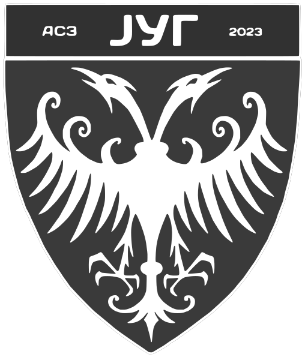
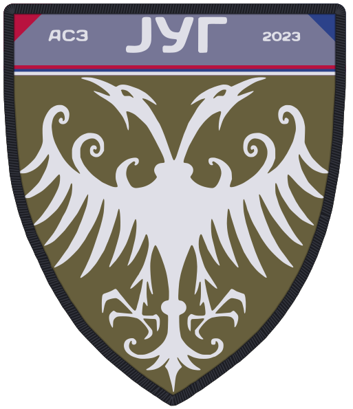
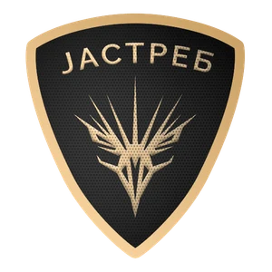
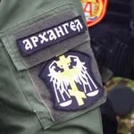
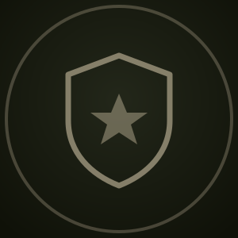
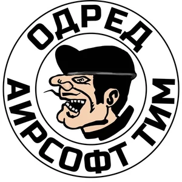

АСЗ ЈУГ — Ерсофт заједница југ
АСЗ ЈУГ (Ерсофт заједница југ) је регионална заједница ерсофт тимова са југа Србије, основана 2023. године.

Шта је АСЗ ЈУГ
АСЗ ЈУГ је савез самосталних тимова, а не клуб изнад клубова. Сваки тим задржава своје име, обележја и начин рада — заједничко је оно што игру чини безбедном и поштеном: исти безбедносни стандард, исти минимум правила и договор да се велике операције раде заједно.
У пракси то значи усклађен календар термина, отворене терене за све чланице, размену маршала и опреме, помоћ новим тимовима при оснивању и заједничку организацију већих игара које ниједан тим не би могао сам да изнесе.
Грб заједнице носи двоглавог орла, ознаку АСЗ ЈУГ и годину оснивања — 2023.

Грб на униформи
Овако грб изгледа на тканом печу који се носи на униформи: маслинасто поље, сива трака са натписом, испод ње српска тробојка, црвени и плави угао и тамни опшивени руб.
Тимови који су основали АСЗ ЈУГ 2023.
Заједницу је 2023. године основало једанаест тимова са југа Србије. ЧОПОР је један од њих.

Јастреб Алексинац Сајт ↗ Чарапанија Крушевац Инстаграм ↗ Хајдуци Ниш Инстаграм ↗
Архангел Ниш · Бојник Инстаграм ↗
Уздржани Линк ускоро
Одред Ниш Инстаграм ↗Ако неки податак није тачан или недостаје линк неког оснивача, јави нам преко контакт секције и исправићемо.